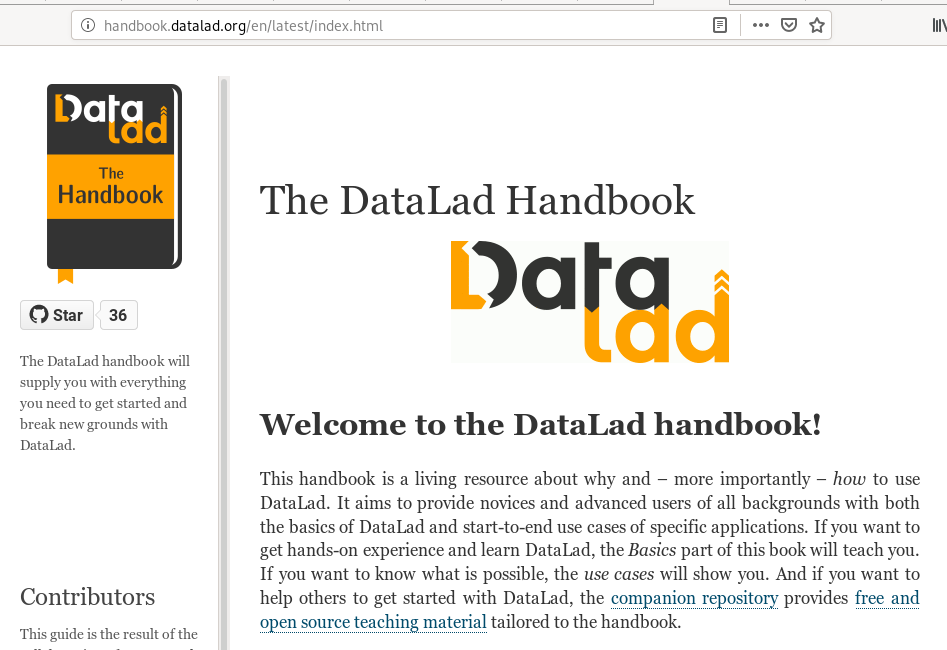
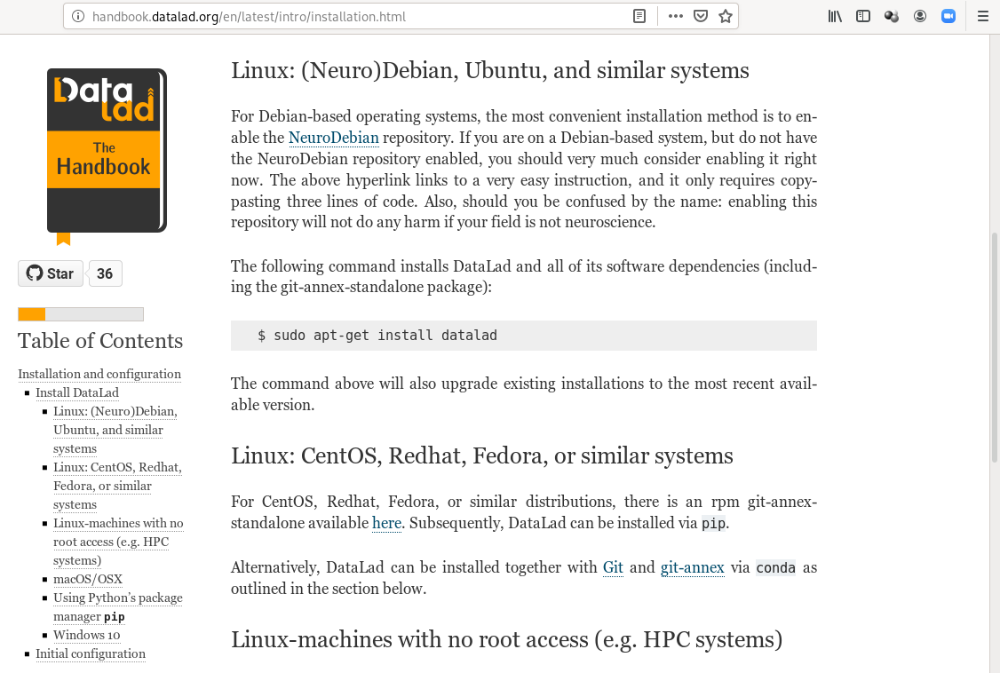
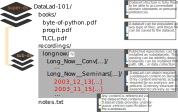
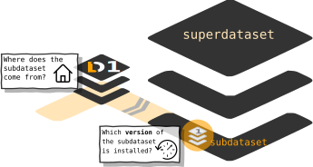
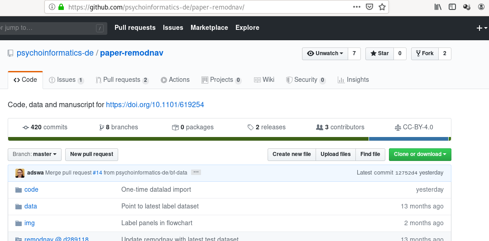
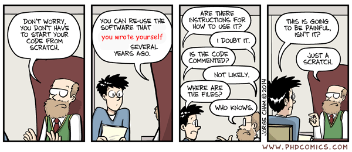
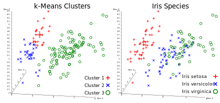
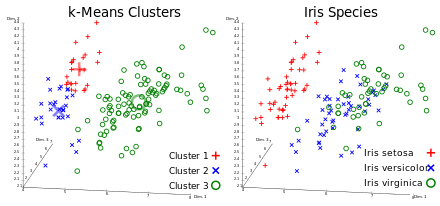
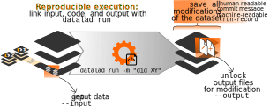
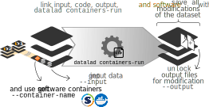

OHBM Brainhack TraintrackAn Introduction to DataLad
Adina Wagner
 @AdinaKrik
@AdinaKrik |
|
|
Psychoinformatics lab,
Institute of Neuroscience and Medicine, Brain & Behavior (INM-7) Research Center Jülich |
Slides: https://github.com/datalad-handbook/course/
Learn all about DataLad at handbook.datalad.org
  in brief
in brief
- A command-line tool with Python API
- Build on top of Git and Git-annex
- Allows...
- ... version-controlling arbitrarily large content,
- ... easily sharing and obtaining data (note: no data hosting!),
- ... (computationally) reproducible data analysis,
- ... and much more
- Completely domain-agnostic
- available for all major operating systems (Linux, macOS/OSX, Windows)
Step 1: Install datalad
Step 2: Configure your git identity
>git config --global --add user.name "Firstname Lastname"
git config --global --add user.email "some@email.com"
Let's start!
Follow along!
Code to follow along: http://handbook.datalad.org/en/latest/code_from_chapters/OHBM.html
DataLad Datasets
- DataLad's core data structure
- Dataset = A directory managed by DataLad
- Any directory of your computer can be managed by DataLad.
- Datasets can be created (from scratch) or installed
- Datasets can be nested: linked subdirectories
Local version control
Local version control
Procedurally, version control is easy with DataLad!

Advice:
- Save meaningful units of change
- Attach helpful commit messages
Summary - Local version control
-
datalad createcreates an empty dataset. - Configurations (-c yoda, -c text2git) are useful.
- A dataset has a history to track files and their modifications.
- Explore it with Git (git log) or external tools (e.g., tig).
datalad saverecords the dataset or file state to the history.- Concise commit messages should summarize the change for future you and others.
datalad statusreports the current state of the dataset.
Consuming datasets and dataset nesting
Consuming datasets
- Datasets are light-weight: Upon installation, only small files and meta data about file availability are retrieved.
- Content can be obtained on demand via
datalad get.
Dataset nesting
Summary - Dataset consumption & nesting
datalad cloneinstalls a dataset.- It can be installed “on its own”: Specify the source (url, path, ...) of the dataset, and an optional path for it to be installed to.
- Datasets can be installed as subdatasets within an existing dataset.
- The --dataset/-d option needs a path to the root of the superdataset.
- Only small files and metadata about file availability are present locally after an install.
- To retrieve actual file content of larger files,
datalad getdownloads large file content on demand. - Content can be dropped to save disk space with
datalad drop.- Do this only if content can be easily reobtained.
- Datasets preserve their history.
- In nested datasets, the superdataset records only the version state of the subdataset.
Example: reproducible research objects
Find this repo at github.com/psychoinformatics-de/paper-remodnav
Read all about it at handbook.datalad.org/en/latest/usecases/reproducible-paper.html
Advantages of nesting
- A modular structure makes individual components (with their respective provenance) reusable.
- Nesting can flexibly link all components and allows recursive operations across dataset boundaries
- Read all about this in the chapter on YODA principles
reproducible data analysis
Basic organizational principles for datasets
Read all about this in the chapter on YODA principles |
|
- do not touch/modify raw data: save any results/computations outside of input datasets
- Keep a superdataset self-contained: Scripts reference subdatasets or files with relative paths
Basic organizational principles for datasets
- Record where you got it from, where it is now, and what you do to it

A classification analysis on the iris flower dataset
 

Reproducible execution & provenance capture
datalad run
Computational reproducibility
- Code may produce different results or fail with different software
- Datasets can store & share software environments and execute code inside of the software container
- DataLad extension:
datalad-container
datalad-containers run
How to get started with DataLad
- Read the DataLad handbook
- An interactive, hands-on crash-course (free and open source)
- Check out or used public DataLad datasets, e.g., from OpenNeuro
-
$ datalad clone ///openneuro/ds000001 [INFO ] Cloning http://datasets.datalad.org/openneuro/ds000001 [1 other candidates] into '/tmp/ds000001' [INFO ] access to 1 dataset sibling s3-PRIVATE not auto-enabled, enable with: | datalad siblings -d "/tmp/ds000001" enable -s s3-PRIVATE install(ok): /tmp/ds000001 (dataset) $ cd ds000001 $ ls sub-01/* sub-01/anat: sub-01_inplaneT2.nii.gz sub-01_T1w.nii.gz sub-01/func: sub-01_task-balloonanalogrisktask_run-01_bold.nii.gz sub-01_task-balloonanalogrisktask_run-01_events.tsv sub-01_task-balloonanalogrisktask_run-02_bold.nii.gz sub-01_task-balloonanalogrisktask_run-02_events.tsv sub-01_task-balloonanalogrisktask_run-03_bold.nii.gz sub-01_task-balloonanalogrisktask_run-03_events.tsv
Acknowledgements
|
|
DataLad on Riot,
DataLad Handbook @ Github